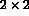
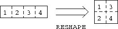

RESHAPE is a general intrinsic function which delivers an array of a specified shape:
RESHAPE(SOURCE,SHAPE[,PAD][,ORDER])
Note,
For example, the following statement assigns SOURCE to A,
A = RESHAPE((/1,2,3,4/),(/2,2/))
The result of the RESHAPE is a 
array (specified by the second argument (/2,2/)), the result is
filled in array element order and looks like:
1 3
2 4
Also consider
A = RESHAPE((/1,2,3,4/),(/2,2/),&
ORDER=(/2,1/))
This time the array is filled up in row major form, (the
subscripts of dimension 2 vary the quickest,) this is specified by the
ORDER=(/2,1/) specifier. The default ordering is, of course,
ORDER=(/1,2/). The ORDER keyword is necessary because some
optional arguments are missing (see Section  for
discussion about keyword arguments). A looks like
for
discussion about keyword arguments). A looks like
1 2
3 4
Visualisation,

Figure: Visualisation of the Effect of the RESHAPE Intrinsic
Clearly the result of RESHAPE must conform to the array object on the LHS of the =, consider,
RESHAPE((/1,2,3,4,5,6/),(/2,4/),(/0/),(/2,1/))
this has the value
1 2 3 4
5 6 0 0
The source object has less elements that the LHS so the resulting array is
padded with the extra values taken repeatedly from the third array
argument, PAD, (/0/). Note how
this reference does not use keyword arguments, it is directly equivalent to,
RESHAPE(SOURCE=(/1,2,3,4,5,6/),&
SHAPE=(/2,4/), &
PAD=(/0/), &
ORDER=(/2,1/))
and
RESHAPE(SOURCE=(/1,2,3,4,5,6/),&
PAD=(/0/), &
SHAPE=(/2,4/), &
ORDER=(/2,1/))
If one of the optional arguments is absent then keyword arguments should be used for the other optional argument to make it clear to the compiler (and the user) which is the missing argument. The keywords are the names of the dummy arguments.